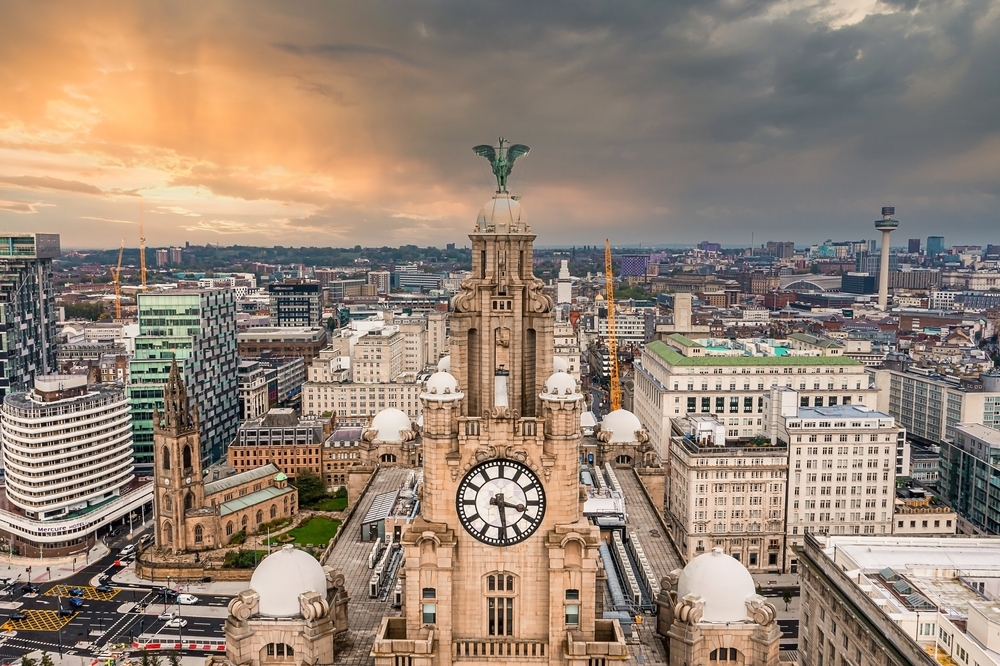

Liverpool

Visit
Everyone in Liverpool is looking forward to welcoming you here.
The city is packed full of culture, from the docks to the music filled Cavern Quarter there is so much to see and do!
It's not just the city centre either, there are also an abundance of outdoor spaces, parks, beaches and stunning coastline to explore. Take the iconic ferry across the Mersey or jump on the Merseyrail to Wirral Peninsula where you can enjoy miles of coastline and countryside scenes.
Stay
We know that sitting back, relaxing and getting beauty sleep is just one part of your holiday – but it’s a very important part.
Liverpool prides itself on its vast choice of accommodation – from luxury big brands to independent hostels, quirky BnB’s to city-centre boltholes – you can rest easy when you come to this city. Some of the choices include:
- Hotels,
- Apartments,
- Bed and Breakfasts,
- Luxury spas.


Eat
Food and Drink in Liverpool is fantastically varied, from sleek fine dining to indie bistros and pop-up foodie heavens to high-street favourites.
From the local delicacy Scouse and traditional Bristish pubs, to cocktails and foods from across the globe.
Restaurants in Liverpool feature flavours from across the globe. In Liverpool ONE you'll find family favourites, ideal for a break from shopping. Bold Street is where you'll find a haven of eateries that make a foodies dream come true, it's home to the first ever Mowgli and boasts Mexican, Greek, Lebanese, Turkish, American, British and many more cuisines.